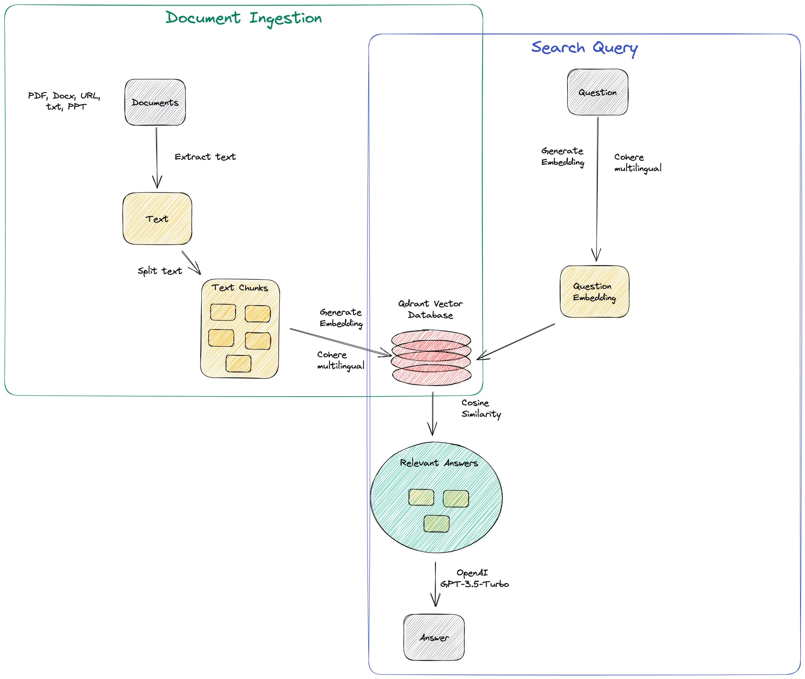

Code Maroon Global Edition: The app that sifts through the noise and delivers the real deal to first responders and relevant authorities.
Information retrieval is a critical component of crisis response, but it's not always easy to find reliable sources in the midst of chaos. Rumours, gossip, and wild speculation run rampant, leaving authorities scrambling to sort fact from fiction. In this scenario, there is a need for a global, reliable and user friendly application to provide quick and accurate facts to the general masses.
CMGE uses the stream of data from social media (Twitter, Reddit), News about an event based on which we can ask queries to the system and get answers based on the news content.
The CrisisFACT dataset is a collection of tweets that were posted during various crisis events, including natural disasters, terrorist attacks, and other emergencies. The dataset was created to help researchers and developers better understand how people use social media during times of crisis and to develop new tools and technologies to support crisis response and recovery efforts.
For each day during an event, the following content is available:
- Twitter stream: This stream provides real-time updates from Twitter users who are discussing the crisis event. The tweets are collected based on keywords and may include noise or irrelevant content, but they can still provide valuable insights into how people are responding to the event and what information they are sharing.
- Reddit stream: The Reddit stream provides a more in-depth view of how people are discussing the crisis event on social media. The stream includes both the original submission and subsequent comments within relevant threads. While some comments may not be informative, the stream can provide a more detailed understanding of the conversation around the event.
- Facebook stream: The Facebook stream provides posts from public pages that are relevant to the crisis event. While the text content of these posts cannot be directly shared, the post and page IDs are included in the stream, which can be used to manually collect the data.
- News stream: The news stream includes articles from traditional news agencies that are reporting on the crisis event. These articles can provide valuable context and analysis of the event, as well as updates on the latest developments.
Analysing these data streams can provide a more complete picture of the crisis event, including how people are responding, what information they are sharing, and what actions are being taken by authorities and organisations.
We use the news feed data here(Headings). First, we use a sentence transformer for getting word embeddings of all headings in the news feed and then use cosine similarity to compare these heading embeddings to the input query embeddings and filter out the top n headings and form the context. Then pass this context and the input query to the QnA model and get output.
RoBERTa
Robustly Optimized BERT Pretraining Approach: It is a transformer based-language model developed by Facebook AI Research in 2019. The widely used BERT (Bidirectional Encoder Representations from Transformers) model has been expanded with the help of RoBERTa, which aims to enhance pretraining and boost performance on downstream NLP tasks. A specific version of the RoBERTa model that has been optimized on the Stanford Question Answering Dataset (SQuAD) 2.0 is called RoBERTa-Base-SQuAD2. The SQuAD2.0 dataset serves as a benchmark for computer comprehension and asks models to read passages and respond to questions about them.
Based on the context presented in the passage, the RoBERTa-Base-SQuAD2 model is trained to predict the response to a given question. The SQuAD2.0 dataset is used to fine-tune the model after it has been pre-trained on a sizable corpus of text using a combination of supervised learning and transfer learning strategies.
RoBERTa-Base-SQuAD2 model is fine-tuned to increase the odds of correctly predicting an answer to a given question while lowering the likelihood of correctly predicting irrelevant or wrong replies.